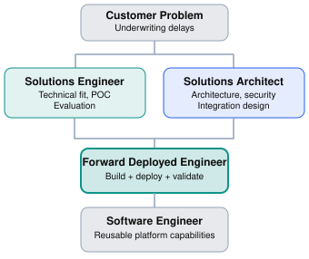
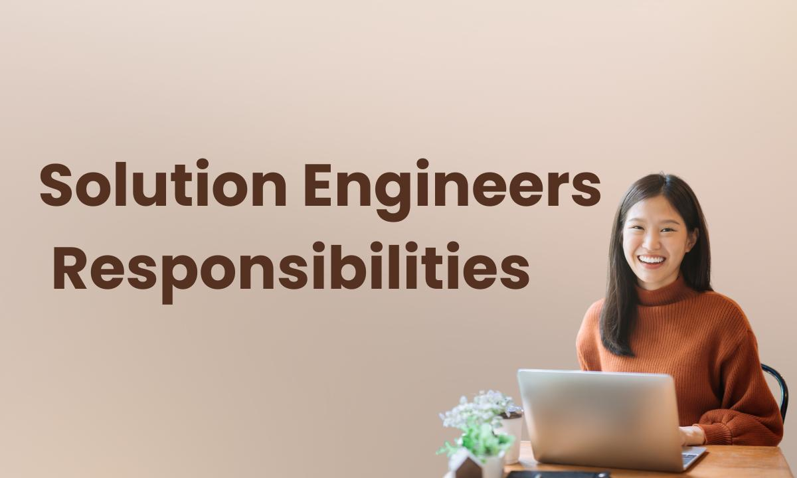

Chapter overview
Imagine a technology company is selling an AI platform to a large financial institution.
The bank wants to automate its loan underwriting process. It needs to integrate customer data, process financial documents, implement AI models, and meet strict security requirements.
Four engineers join the project:
A Software Engineer (SWE)
A Forward Deployed Engineer (FDE)
A Solutions Engineer (SE)
A Solutions Architect (SA)
All four understand software. All four might discuss APIs, databases, cloud infrastructure, and system architecture.
Yet their responsibilities, decision-making authority, and success criteria can be substantially different.
Understanding these differences is essential for software engineers considering an FDE career. It also helps explain why a highly capable SWE may not automatically be a strong FDE candidate.
Learning objectives
By the end of this chapter, you should be able to:
Explain the primary responsibilities of all four roles.
Identify differences in coding, architecture, customer interaction, and delivery ownership.
Understand how the roles collaborate during enterprise implementations.
Recognize which SWE skills transfer directly to FDE positions.
Evaluate job descriptions without relying solely on their titles.
2.1 The four roles at a glance
Software Engineer
Build the product
Creates reliable, scalable software capabilities.
Forward Deployed Engineer
Make it work for the customer
Builds and deploys solutions in real customer environments.
Solutions Engineer
Prove the solution fits
Connects customer needs to product capabilities and technical validation.
Solutions Architect
Design the right solution
Defines architectures that meet technical and business constraints.
A particularly helpful distinction comes from Palantir. Its engineering career materials describe product development engineers as concentrating on capabilities that serve many customers, while forward deployed engineers focus on delivering technical and operational outcomes for particular customers.
However, job titles aren't standardized. A Solutions Engineer at one company may write production code, while an FDE at another may spend considerable time on solution architecture and stakeholder management.
We should therefore compare what people own, rather than assuming a title tells the whole story.
2.2 Software Engineer — Building the product
Primary responsibility: Design, build, maintain, and improve software products or internal systems.
Software Engineers typically focus on reusable capabilities, reliability, performance, maintainability, and engineering quality.
Consider a company that provides an AI document processing platform.
The SWE team might be responsible for:
Building document ingestion APIs.
Improving model-serving performance.
Implementing authentication and authorization.
Developing reusable UI components.
Maintaining automated tests and CI/CD pipelines.
Improving reliability across all customers.
A typical SWE assignment
Our document processing API currently handles 100 requests per second. Improve its throughput to 500 requests per second while maintaining our latency objectives.
This is a technical problem with relatively clear success criteria.
The engineer investigates bottlenecks, designs improvements, writes code, runs tests, and deploys the changes.
How success is measured
Common indicators include system reliability, product adoption, delivery quality, performance, maintainability, and contribution to product goals.
Important: Modern SWEs often work with ambiguous requirements, customers, and business stakeholders too. Customer interaction is not exclusive to FDEs.
2.3 Forward Deployed Engineer — Delivering customer outcomes
Primary responsibility: Translate a customer's complex requirements into working technical solutions, often owning delivery from discovery through production.
FDEs combine software development, architecture, customer engagement, and implementation ownership.
Consider the same document processing platform.
A bank wants to use it to automate underwriting, but its data lives in legacy databases, its documents contain sensitive information, and its approval process requires human review.
An FDE might:
Interview underwriting teams to understand the existing workflow.
Examine the bank's APIs and data formats.
Design an integration architecture.
Build document processing and validation services.
Implement authentication and access controls.
Deploy and test the system in the customer's environment.
Measure whether the workflow actually improves.
Feed reusable requirements back to the product team.
The FDE may write substantial production code, but coding is only one part of the job.
A typical FDE assignment
Our bank wants to reduce underwriting processing time by 40%. Determine how our platform can help, build the necessary integrations, and deliver a production-ready solution.
Notice the difference: the assignment starts with a business outcome, not a predefined engineering implementation.
Real-world example: OpenAI
OpenAI describes its FDE responsibilities as including customer discovery, technical scoping, system design, implementation, production rollout, and adoption.
Its role description also emphasizes measurable workflow impact and reusable engineering patterns.
This is an important characteristic of mature FDE organizations: the work should not become an endless collection of one-off customer customizations. Successful engagements can also inform reusable product improvements.
2.4 Solutions Engineer — Demonstrating technical value
Primary responsibility: Help customers understand, evaluate, and validate whether a product solves their technical and business requirements.
Solutions Engineers frequently collaborate with sales, customer success, product, and engineering teams.
Solutions Engineering is often associated with pre-sales, although some SE teams also own post-sales technical work.
For the bank's document automation project, the SE might:
Run technical discovery meetings.
Demonstrate platform capabilities.
Explain API and integration options.
Identify technical blockers.
Build a proof of concept.
Respond to technical evaluation questions.
Support a customer's purchasing decision.
A typical SE assignment
The bank is evaluating three AI vendors. Demonstrate how our platform handles underwriting documents, validate its technical requirements, and help the customer determine whether our solution is suitable.
The SE's immediate goal may be technical validation and customer confidence, rather than ownership of the entire production implementation.
Does an SE write code?
Sometimes extensively.
A Solutions Engineer working at a developer-platform company might write Python, JavaScript, SQL, or infrastructure-as-code to demonstrate integrations.
At another company, SE work may emphasize presentations, demos, solution configuration, and technical discovery.
Do not assume Solutions Engineering is a non-coding role.
2.5 Solutions Architect — Designing the technical blueprint
Primary responsibility: Design solutions that meet functional, security, scalability, reliability, and operational requirements.
Solutions Architects often evaluate technical trade-offs and guide implementation teams.
For the bank's document automation system, the SA might design:
Network and infrastructure topology.
Identity and access management.
Data ingestion and storage architecture.
Integration between cloud and on-premises systems.
Availability and disaster recovery.
Monitoring, observability, and governance.
Deployment and operational patterns.
A typical SA assignment
Design a secure, scalable architecture for the bank's document processing solution, including connectivity, identity, data protection, and disaster recovery requirements.
An SA may create architecture diagrams, reference implementations, proofs of concept, and technical recommendations.
Some architects also write production code or own implementation. Others primarily guide engineering teams.
For example, Amazon Web Services describes its Solutions Architects as combining technical expertise, business understanding, and customer advisory skills to design solutions using AWS services.
2.6 Side-by-side comparison
The following table represents common role patterns in enterprise technology companies.
Dimension | SWE | FDE | SE | SA |
|---|---|---|---|---|
Primary focus | Product engineering | Customer deployment | Technical validation | Solution architecture |
Coding | Usually high | Variable, often high | Variable | Variable |
Customer interaction | Low to high | Usually high | Usually high | Usually high |
Discovery | Sometimes | Core responsibility | Core responsibility | Common |
Architecture | Common | Common | Sometimes | Core responsibility |
Production delivery | Common | Frequently owned | Sometimes | Varies |
Pre-sales | Occasionally | Sometimes | Frequently | Frequently |
Business communication | Important | Critical | Critical | Critical |
Product roadmap feedback | Common | Common | Common | Common |
The labels describe tendencies, not guaranteed requirements or measured industry averages.
A conceptual comparison
Illustrative role emphasis
Relative emphasis, not empirical percentages
Hands-on coding
Very high
Customer interaction
Low
Architecture
High
Delivery ownership
Moderate
Illustrative role emphasis
Relative emphasis, not empirical percentages
Hands-on coding
High
Customer interaction
Very high
Architecture
High
Delivery ownership
Very high
Illustrative role emphasis
Relative emphasis, not empirical percentages
Hands-on coding
Moderate
Customer interaction
Very high
Architecture
Moderate
Delivery ownership
High
Illustrative role emphasis
Relative emphasis, not empirical percentages
Hands-on coding
Moderate
Customer interaction
High
Architecture
Very high
Delivery ownership
High
The biggest takeaway is that an FDE is not simply a Solutions Engineer who writes more code or a Software Engineer who attends more customer meetings.
FDEs are often distinguished by combining direct customer engagement with hands-on ownership of technical delivery.
2.7 How the four roles collaborate
Let's return to our bank's underwriting automation project.

Illustrative collaboration model. In real engagements, these activities overlap and feedback flows in both directions.A possible division of work:
Solutions Engineer: Determines whether the platform can meet the bank's requirements and demonstrates a proof of concept.
Solutions Architect: Defines the architecture for secure integration with the bank's systems.
Forward Deployed Engineer: Implements the integration, adapts the workflow, resolves deployment blockers, and helps bring the solution into production.
Software Engineer: Improves the core platform when the engagement reveals missing capabilities that should serve many customers.
Not every organization employs all four roles. One person may perform multiple functions, particularly at a startup.
An important real-world nuance
OpenAI's Forward Deployed Software Engineer role explicitly describes collaboration with Solutions Engineering, Solutions Architects, Sales, and Customer Success. That is a concrete example of these functions working together rather than being interchangeable.
2.8 The transition from SWE to FDE
For a traditional software engineer, the biggest transition is not necessarily learning a new programming language or cloud platform.
It is learning to take responsibility for a broader problem.
Consider the following shift:
SWE habit | FDE capability to develop |
|---|---|
Receive technical requirements | Discover and challenge requirements |
Optimize code quality | Balance quality with customer outcomes |
Discuss implementation with engineers | Communicate with business and technical stakeholders |
Deliver an assigned feature | Own a customer solution lifecycle |
Focus on product behavior | Understand operational workflows |
Escalate unclear requirements | Drive clarification and decisions |
Example: Changing how you frame a problem
A customer says:
"We need a chatbot for our support team."
An implementation-focused response might be:
"We can use an LLM with RAG, connect it to your knowledge base, and expose it through a React application."
An FDE-oriented response might be:
"What kinds of questions are your support agents struggling to answer? How frequently do those questions occur? Where is the relevant information stored? What accuracy requirements do you have? And how would we determine whether the solution improves support operations?"
The second response does not reject the chatbot idea.
It establishes whether a chatbot is the right solution before committing to it.
2.9 Which role is right for you?
This is not a personality test. It is a way to reflect on the type of work you want to do.
Career exploration
Choose the work you find most interesting. There are no right or wrong answers.
1. Which activity sounds most appealing?
2. What kind of responsibility would you prefer?
3. Which challenge interests you most?
2.10 Recommended learning resources
These are selected to give learners firsthand perspectives from engineers and actual employer descriptions.

WATCH · REQUIRED · VIDEO
What Does a Solutions Engineer Actually Do?Source link needs rechecking. See the resource directory for details.
Seraphine Young · October 2023
A firsthand perspective on validating customer opportunities, developing solutions, and working through technical challenges.
WATCH · OPTIONAL · VIDEO
Day in the Life of an AWS Solutions ArchitectSource link needs rechecking. See the resource directory for details.
Rosen Georgiev · August 2024
A look at a Solutions Architect's workday, including architecture design and meetings.
READ · REQUIRED · ARTICLE
OpenAI · Colin Jarvis · October 22, 2026
Explains the deployment gap, how FDEs work with customers, and why reusable solutions matter. A particularly valuable firsthand account of a modern FDE organization.
READ · REQUIRED · ROLE COMPARISON
Compare product engineering and forward deployed engineering through Palantir's own descriptions.
READ · OPTIONAL · EMPLOYER EXAMPLES
Databricks Solutions Engineer and MongoDB Forward Deployed EngineerSource link needs rechecking. See the resource directory for details.
Compare two actual job descriptions. Notice that both emphasize hands-on building, customer outcomes, and reusable technical assets despite different titles.
Study tip
2.11 Practical exercise — Who owns what?
Exercise 2.1: Assign the responsibilities
A SaaS company is helping a retailer deploy an inventory analytics platform. Assign the most likely primary owner for each task in a company with distinct SWE, FDE, SE, and SA teams.
1. Improve the core analytics engine so all customers benefit.
2. Lead a technical product evaluation for a prospective customer.
3. Define network connectivity, data flow, and security architecture.
4. Implement the retailer's inventory integration and deploy it into production.
2.12 Knowledge check
2.13 Chapter summary
The key ideas to remember:
SWE: Primarily develops and maintains software capabilities.
FDE: Combines customer engagement with hands-on technical implementation and delivery ownership.
Solutions Engineer: Frequently helps customers evaluate and validate a product's technical value.
Solutions Architect: Primarily focuses on architecture, technical trade-offs, and designing solutions.
Role titles overlap. The actual job description, coding expectations, and delivery responsibilities matter more than the title.
For someone transitioning from SWE to FDE, the most important shift is expanding from implementation ownership to customer problem and outcome ownership.
UP NEXT · MODULE 1 / CHAPTER 3
The Lifecycle of an FDE Engagement
We'll follow a realistic customer engagement from the initial discovery call through solution scoping, architecture, implementation, deployment, adoption, and handoff.
This chapter will introduce the artifacts an FDE produces at each stage, including discovery notes, requirements, architecture diagrams, implementation plans, and success metrics.
Field notes
Capture the idea you will use in your next customer conversation.